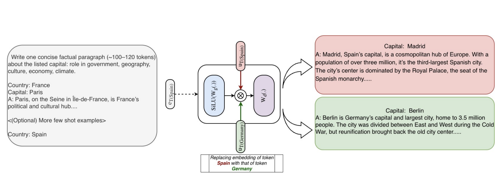

The Rise of Static Memory in LLMs
1. Background: The Memory-Compute Bottleneck
Knowledge Primitives Limit Reasoning
Improving reasoning is a core objective of modern AI. However, recent research suggests a critical limit: a model’s ultimate reasoning capacity is fixed by the fundamental knowledge “primitives” acquired during Pre-Training. While Post-Training strategies like Reinforcement Learning (RL) can enhance skills, they cannot create knowledge from scratch; they can only build upon the latent foundation laid earlier (Zhang et al., 2025).
The Cost of “Remembering”
Standard Transformers face a computational inefficiency challenge when scaling this knowledge foundation. Research on interpretability indicates that dense models do not retain knowledge in a static database; instead, they dynamically “compute” it (Templeton et al., 2024; Ameisen et al., 2025).
Even a simple recall task, such as retrieving “The Golden Gate Bridge,” necessitates a costly, multi-step sequence of feature interactions across the model’s layers. This design leads to a “Memory-Compute” bottleneck: we use the same expensive matrix multiplications to calculate complex math problems as we do to recall that “Paris is the capital of France.”
To achieve further scalability, we need architectures that separate the functions of “knowing” from “thinking” (Lindsey et al., 2025).
2. The Solution: Static Memory Architectures
Three new architectures—STEM (Meta/CMU), PLE (Google DeepMind), and Engram (DeepSeek)—address this by moving static information into Embedding Modules. Instead of computing facts, these models retrieve them.
| Feature | Gemma 3n PLE (DeepMind) | STEM (Meta/CMU) | Engram (DeepSeek) |
|---|---|---|---|
| Core Concept | Augmentation: Adds extra embeddings to modulate layers. | Replacement: Swaps FFN Up-Projection for a Lookup Table. | Complement: Adds a “Memory Module” alongside the backbone. |
| Mechanism | Per-Layer Embeddings (Streamed) | Token-indexed Lookup (Static) | Hashed N-Gram Lookup (Contextual) |
| Hardware Goal | On-Device Efficiency (Low VRAM) | Training Stability & Interpretability | Massive Scaling (Memory vs. Logic) |
| Key Win | Running 8B models on 3GB RAM phones | “Surgical” Knowledge Editing | +5.0 on Reasoning (BBH) |
3. Gemma 3n (Per Layer Embeddings)
Ref: Gemma 3n Technical Report (2025)
Gemma 3n is engineered specifically for mobile/edge deployment. Its goal is to fit a model with “8B parameter intelligence” onto a device that only has RAM for a 2B model.
The Architecture
- PLE (Per Layer Embeddings): Instead of storing all weights in VRAM, it keeps massive embedding tables in the slower System RAM (CPU).
- Streaming: As the neural network processes layer \(i\), the specific embedding for that layer is streamed from the CPU to the NPU just in time.
- Modulation: PLEs do not replace the FFN; they modulate the residual stream or FFN output.
Core Implementation
The mechanism works by retrieving a massive, token-specific embedding vector pre-sliced for every decoder layer.
# Conceptual implementation based on Gemma 3n
# Ref: gemma3n/modeling_gemma3n.py
class Gemma3nModel(nn.Module):
def __init__(self, config):
# The massive "Memory Bank" storing all layer-specific vectors for every token.
# Total Size: Vocab_PLE x (Num_Layers * PLE_Dim)
self.embed_tokens_per_layer = Gemma3nTextScaledWordEmbedding(
config.vocab_size_per_layer_input,
config.num_hidden_layers * config.hidden_size_per_layer_input,
self.padding_idx,
embed_scale=config.hidden_size_per_layer_input * 0.5,
)
def get_per_layer_inputs(self, input_ids: torch.LongTensor) -> torch.Tensor:
# Look up the massive vector and "slice" it for each layer.
# Output: [Batch, Seq_Len, Num_Layers, PLE_Dim]
return self.embed_tokens_per_layer(input_ids).reshape(
*input_ids.shape,
self.config.num_hidden_layers,
self.hidden_size_per_layer_input,
)
# Inside the decoder layer forward pass:
def forward_layer(self, first_prediction, per_layer_input):
# A. GATE: Use context to determine "how much" memory to read.
first_prediction = self.per_layer_input_gate(first_prediction)
first_prediction = self.act_fn(first_prediction)
# B. MODULATE: Inject retrieved static memory via element-wise multiplication.
first_prediction = torch.multiply(first_prediction, per_layer_input)
# C. PROJECT: Mix result back into main residual stream.
first_prediction = self.per_layer_projection(first_prediction)
first_prediction = self.post_per_layer_input_norm(first_prediction)
# D. ADD
return first_prediction4. STEM (Scaling Transformers with Embedding Modules)
Ref: He et al. (2026)
STEM identifies that the Up-Projection matrix in a Feed-Forward Network (FFN) acts largely as a “Key” lookup in a Key-Value memory system.

The Architecture
STEM replaces the dense Up-Projection matrix (\(W^u\)) with a static, token-indexed embedding table (\(U_{token\_id}\)). It retains the Gate and Down projections as dense layers.
\[ y = W_{down}(\text{SiLU}(W_{gate}x) \odot \text{Lookup}(TokenID)) \]
Key Benefits
- Interpretability: Because embeddings are linked to individual tokens, researchers can perform “Knowledge Editing”. By swapping the “Spain” embedding for “Germany” in specific layers, the model can be tricked into “hallucinating” consistent facts (e.g., saying the capital of Spain is Berlin) without changing the input text.
- Efficiency: It removes approximately 1/3 of the FFN parameters from the active compute path.

# Ref: lingua/stem.py
class STEMFFN(nn.Module):
def __init__(self, config):
super().__init__()
# 1. Gate Projection (W_g) - Kept Dense
self.gate_proj = nn.Linear(config.hidden_size, config.intermediate_size, bias=False)
# 2. Down Projection (W_d) - Kept Dense
self.down_proj = nn.Linear(config.intermediate_size, config.hidden_size, bias=False)
# 3. STEM Embedding Table (U_l) - THE REPLACEMENT
# Replaces the dense "Up Projection" (W_u).
# Size: [Vocab Size x FFN Intermediate Size]
self.stem_embedding = nn.Embedding(config.vocab_size, config.intermediate_size)
self.act_fn = nn.SiLU()
def forward(self, x, input_ids):
# Step A: Compute the Gate (Contextual)
gate_output = self.act_fn(self.gate_proj(x))
# Step B: Retrieve Static Memory (Content)
# Instead of computing (W_u * x), we just look up the vector for the token.
stem_output = self.stem_embedding(input_ids)
# Step C: Combine (Gating)
# Multiply static fact by dynamic context.
activated_output = gate_output * stem_output
# Step D: Project Down
output = self.down_proj(activated_output)
return output5. DeepSeek Engram
Ref: Li et al. (2026)
DeepSeek introduces “Conditional Memory” to address the inefficiency of using expensive compute to simulate knowledge retrieval.

The Architecture
- Engram Module: A dedicated module that augments the neural backbone, structurally separating storage from logic.
- Modernized N-Grams: It uses Hashed N-Grams to map multi-token sequences (e.g., “The capital of”) to static embedding vectors via fast, constant-time \(O(1)\) retrieval.
- Context-Aware Gating: The retrieved memory is fused intelligently using the model’s current hidden state to suppress noise.
Key Findings
DeepSeek found a “U-Shaped Scaling Law,” indicating an optimal ratio exists between “Thinking Parameters” (MoE) and “Remembering Parameters” (Engram). Allocating ~20% of the parameter budget to Engram yields better results than a pure MoE model.

Surprisingly, offloading static knowledge improves reasoning benchmarks (BBH +5.0). By relieving the attention layers from the burden of “memorizing” facts, the model’s depth is freed up to perform complex logic (Li et al., 2026).
Conclusion
The current “Memory Wall,” where GPU processing speed exceeds memory bandwidth, has created a bottleneck. By decoupling knowledge storage from active parameters, these architectures allow us to scale “memory” massively without exploding GPU requirements, paving the way for models that can “know” more while “thinking” more efficiently.
References
Ameisen, et al. (2025). Circuit Tracing: Revealing Computational Graphs in Language Models. Anthropic.
Google DeepMind. (2025). Gemma 3n Technical Report. Google DeepMind.
He, et al. (2026). STEM: Scaling Transformers with Embedding Modules. ArXiv: 2601.10639.
Li, et al. (2026). Conditional Memory via Scalable Lookup. ArXiv: 2601.07372.
Lindsey, et al. (2025). On the Biology of a Large Language Model. Anthropic.
Templeton, et al. (2024). Scaling Monosemanticity: Extracting Interpretable Features from Claude 3 Sonnet. Anthropic.
Zhang, et al. (2025). On the Interplay of Pre-Training, Mid-Training, and RL on Reasoning Language Models. ArXiv: 2512.07783.